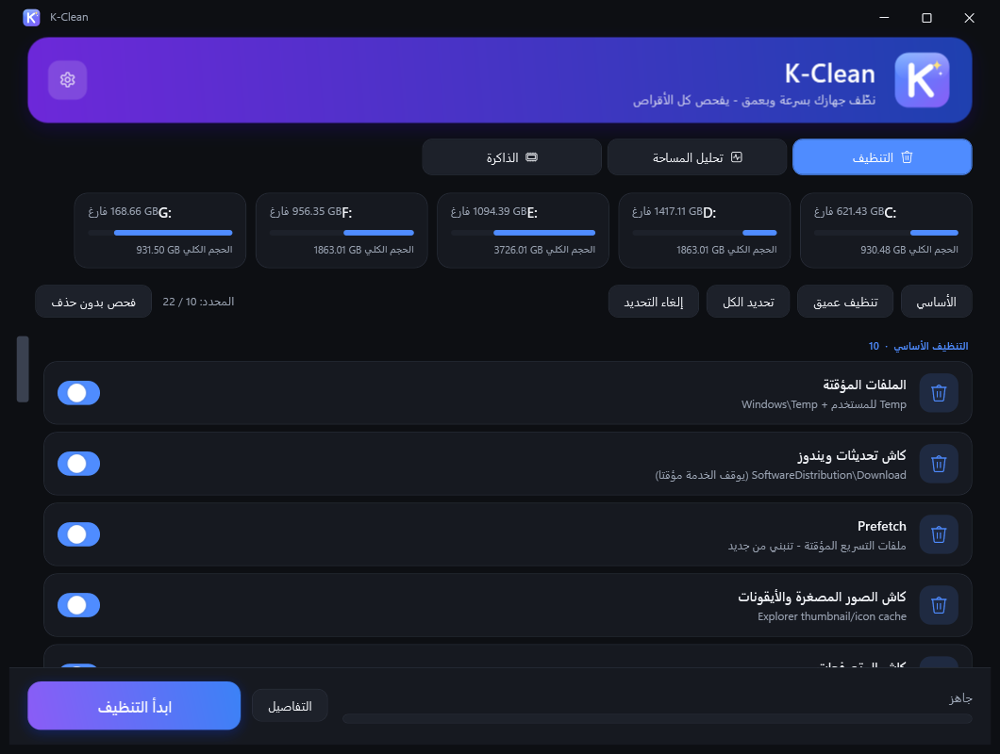
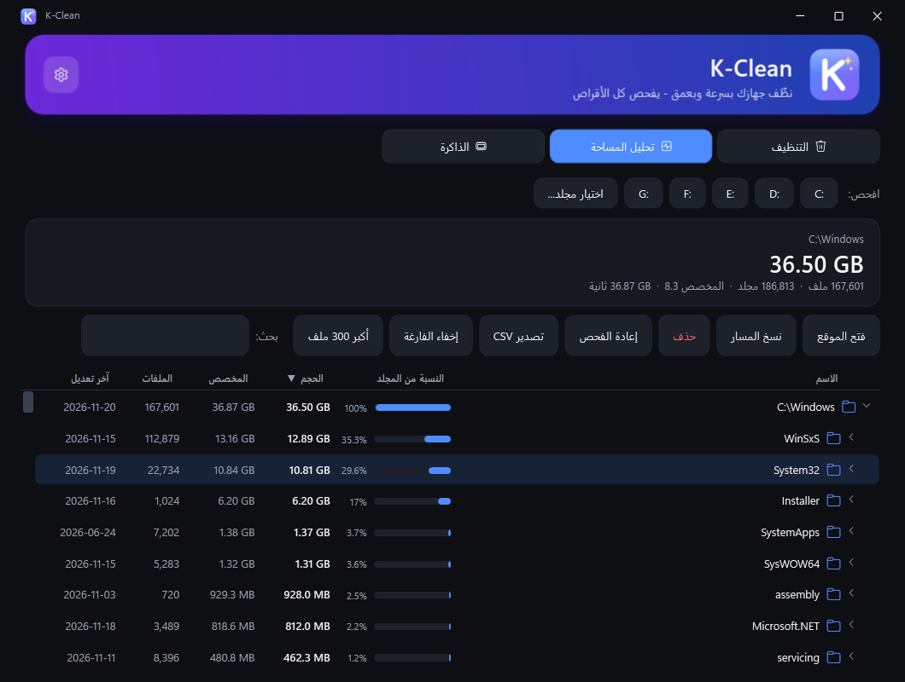
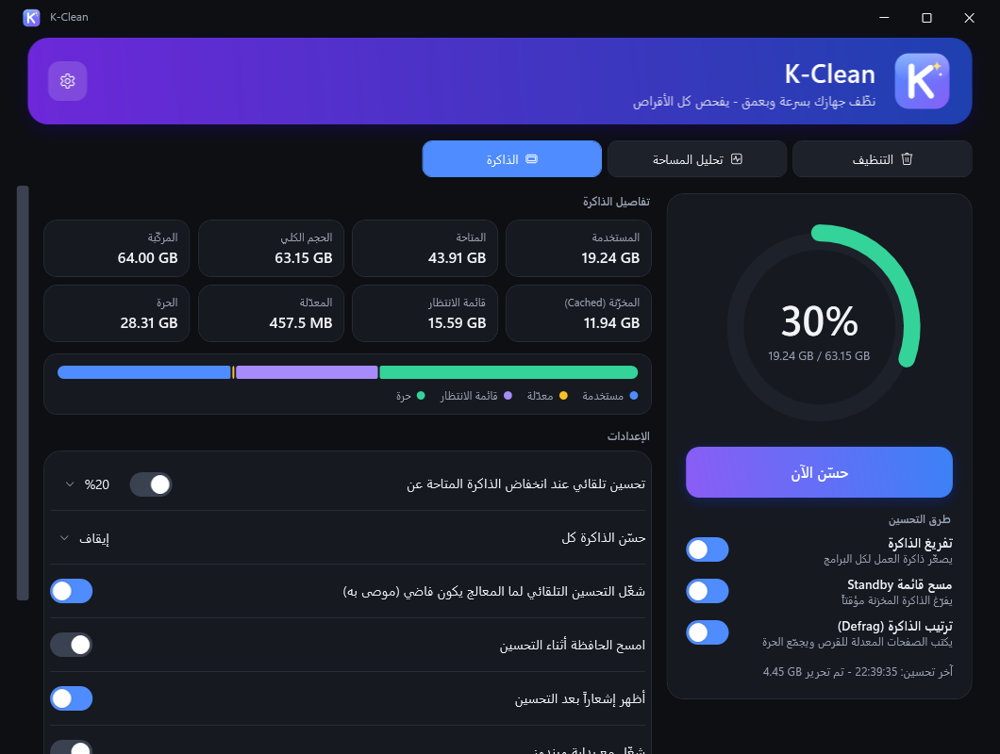

تنظيف عميق · محلل مساحة · محسّن رام · تحديث تلقائي
Deep cleaner · Disk analyzer · RAM optimizer · Auto-updates
اختر اللي تبي تنظفه، على كل الأقراص، مع تنظيف الرامات.
تصفّح أحجام المجلدات بسرعة، وكليك يمين: فتح المكان، نسخ المسار، حذف وأكثر.
تفريغ الذاكرة يدوياً أو تلقائياً، أيقونة في شريط المهام واختصار.
يتحدث لحظة ما تفتحه، ويتأكد من البصمة قبل التثبيت.



winget install kloody60.K-Clean scoop bucket add kclean https://github.com/kloody60/scoop-kclean scoop install k-clean